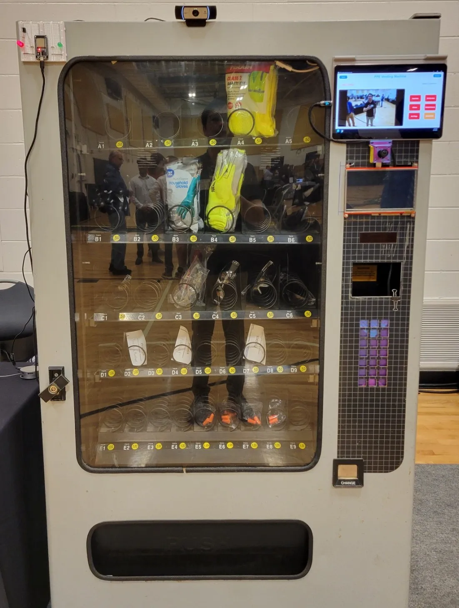
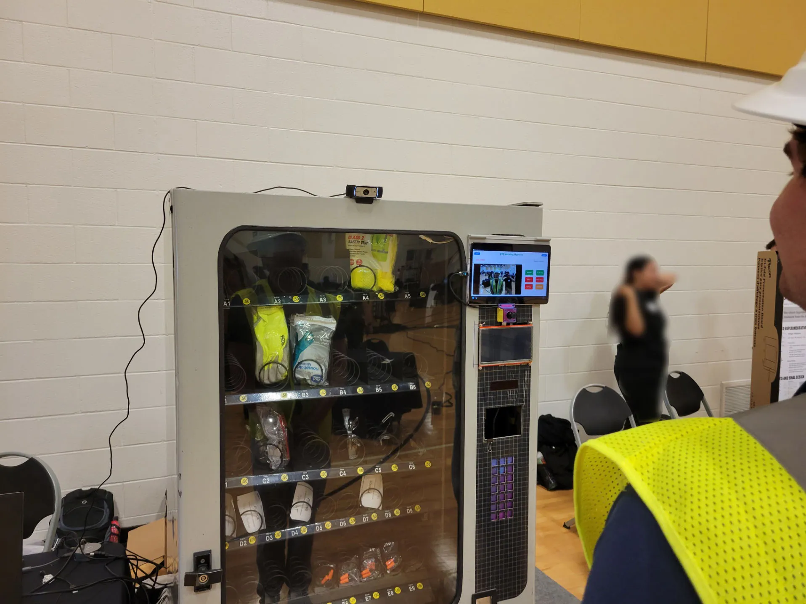

PPE A.I. Vending Machine
Intelligent vending machine system utilizing AI camera technology to detect PPE compliance and automatically dispense missing Personal Protective Equipment to workers. This project addresses workplace safety through cutting-edge computer vision technology.
Overview
This senior capstone project delivers an intelligent vending system that uses computer vision to detect PPE compliance in real time and automatically dispenses missing equipment—addressing workplace safety through automated, AI-driven detection.
Key Features
- Real-time PPE detection via AI camera and custom-trained YOLO model
- Automated dispensing of missing Personal Protective Equipment to workers
- Edge deployment on Nvidia Jetson Orin Nano with PySide6 GUI
- Hardware integration and networking for end-to-end system operation
Technical Implementation
Python, PySide6, OpenCV, YOLO, Nvidia Jetson Orin Nano. Full project site: ckyb63.github.io/capstone_T54_gui
PPE Detection Demo
